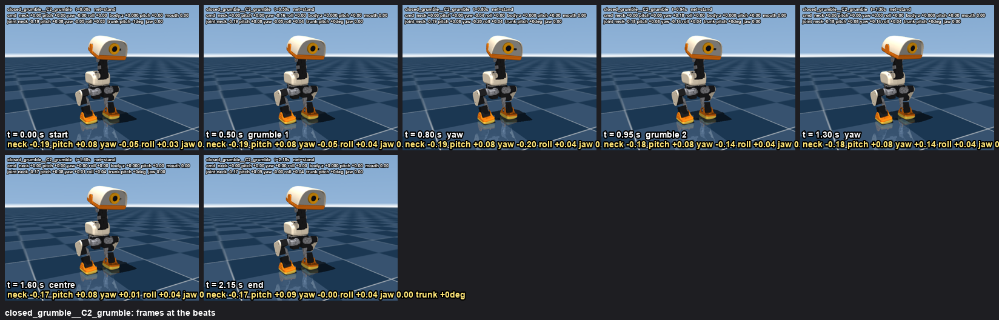
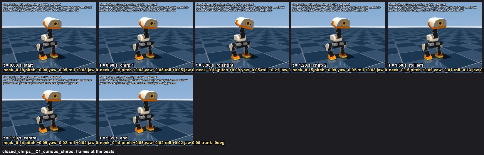
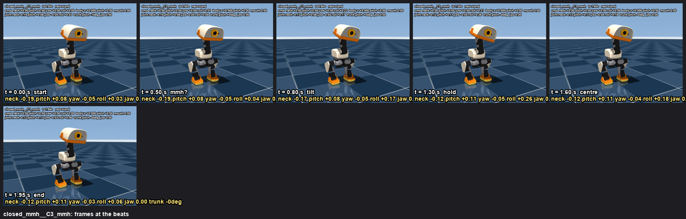
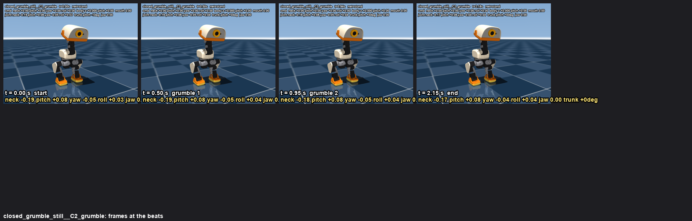

Sound-only emotion variants: the mouth intent stays 0 whatever the sound, so a held leash stays in the beak. Standing, stand net, neck 0, head_pitch 0; only small roll / yaw wobbles. Synth sounds are low-passed at 900-1100 Hz with a nasal, dull timbre (a shut beak). Simulation 640x480, 30 fps. Files: /Users/remi/microduck/notes/emotions/motion/closed/ (renderer closed.py, sounds sounds/make_closed.py).
For the scene's lines 3 and 5 (the duck answers Reachy through the leash): the muffled grumble with the yaw twitch reads as an irritated, mouth-full answer. closed_chirps is the same curious emotion the duck already has, just with the beak shut (use it when the answer should stay friendly); closed_mmh for a question.
motion: irritated grumble with a small yaw twitch: -0.25 on the first buzz (0.5 s), +0.25 on the second (0.95 s), centre by 1.5 s
beats: 0.50 s grumble 1 · 0.80 s yaw · 0.95 s grumble 2 · 1.30 s yaw · 1.60 s centre
sound: an irritated muffled grumble, two low nasal buzzes (190 -> 150 Hz, low-passed at 900 Hz): 'mrr-mrrh' · beak closed
measured: no fall · trunk drift 0.1 cm · trunk pitch -1..+0 deg · joints: neck -0.19, head_pitch +0.08..+0.09, |yaw| 0.20, |roll| 0.04 rad · jaw at the quacks [0.0, 0.0], between 0.0 · nets stand
beats sheet · keyframes json (with mouth) · silent mp4

the curious chirps with a small roll wobble: +0.2 on the first chirp (0.6 s), -0.2 on the second (1.2 s), centre by 1.9 s; no pitch, no neck
motion: the curious chirps with a small roll wobble: +0.2 on the first chirp (0.6 s), -0.2 on the second (1.2 s), centre by 1.9 s; no pitch, no neck
beats: 0.60 s chirp 1 · 0.90 s roll right · 1.20 s chirp 2 · 1.50 s roll left · 1.90 s centre
sound: the curious two chirps (sounds/robot/curious_a.wav, chirps at 0.6 / 1.2 s), beak kept shut · beak closed
measured: no fall · trunk drift 0.1 cm · trunk pitch -1..+0 deg · joints: neck -0.19, head_pitch +0.08..+0.09, |yaw| 0.05, |roll| 0.21 rad · jaw at the quacks [0.0, 0.0], between 0.0 · nets stand
beats sheet · keyframes json (with mouth) · silent mp4

irritated grumble with a small yaw twitch: -0.25 on the first buzz (0.5 s), +0.25 on the second (0.95 s), centre by 1.5 s
motion: irritated grumble with a small yaw twitch: -0.25 on the first buzz (0.5 s), +0.25 on the second (0.95 s), centre by 1.5 s
beats: 0.50 s grumble 1 · 0.80 s yaw · 0.95 s grumble 2 · 1.30 s yaw · 1.60 s centre
sound: an irritated muffled grumble, two low nasal buzzes (190 -> 150 Hz, low-passed at 900 Hz): 'mrr-mrrh' · beak closed
measured: no fall · trunk drift 0.1 cm · trunk pitch -1..+0 deg · joints: neck -0.19, head_pitch +0.08..+0.09, |yaw| 0.20, |roll| 0.04 rad · jaw at the quacks [0.0, 0.0], between 0.0 · nets stand
a muffled rising 'mmh?' with a small roll tilt (+0.22 from 0.5 s, held, back by 1.6 s)
motion: a muffled rising 'mmh?' with a small roll tilt (+0.22 from 0.5 s, held, back by 1.6 s)
beats: 0.50 s mmh? · 0.80 s tilt · 1.30 s hold · 1.60 s centre
sound: a muffled rising 'mmh?' (205 -> 300 Hz, low-passed): a question through a shut beak · beak closed
measured: no fall · trunk drift 0.1 cm · trunk pitch -1..+0 deg · joints: neck -0.19, head_pitch +0.08..+0.11, |yaw| 0.05, |roll| 0.26 rad · jaw at the quacks [0.0], between 0.0 · nets stand
beats sheet · keyframes json (with mouth) · silent mp4

the grumble with no head motion at all (the leash stays perfectly still)
motion: the grumble with no head motion at all (the leash stays perfectly still)
beats: 0.50 s grumble 1 · 0.95 s grumble 2
sound: an irritated muffled grumble, two low nasal buzzes (190 -> 150 Hz, low-passed at 900 Hz): 'mrr-mrrh' · beak closed
measured: no fall · trunk drift 0.1 cm · trunk pitch -1..+0 deg · joints: neck -0.19, head_pitch +0.08..+0.09, |yaw| 0.05, |roll| 0.04 rad · jaw at the quacks [0.0, 0.0], between 0.0 · nets stand
beats sheet · keyframes json (with mouth) · silent mp4

{kind=link}
{kind=link}
{kind=link}
{kind=link}